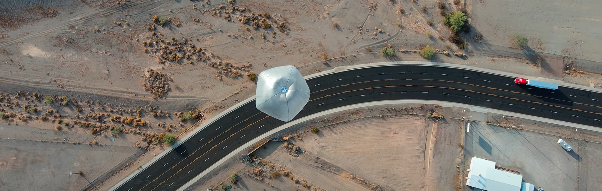
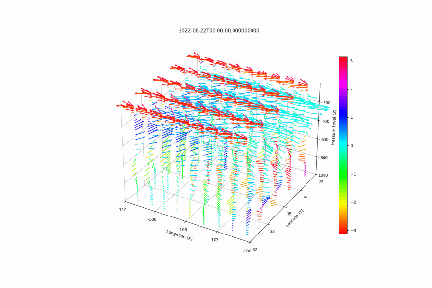
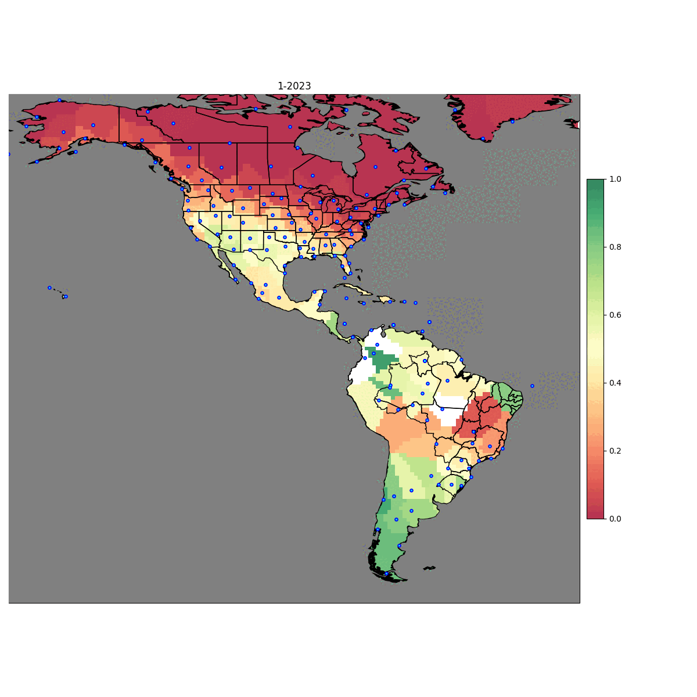

About RL HAB
High-altitude aerial platforms are typically flown in the stratosphere at heights between 18 to 50 km, above traditional commercial air traffic. Additionally, since the stratosphere is a layer where the vertical temperature has a positive lapse rate due to solar radiation absorption by Ozone and other gases, vertical air mixing tends to be suppressed and generally turbulence and wind speeds are lower in stratosphere than in the troposphere. High Altitude balloons (HABs) and to a lesser extent, high-altitude gliders, can utilize varying winds in the stratosphere to perform station-keeping and other trajectory following maneuvers by changing altitude, as shown in Figure below. Google Loon and Aerostar have demonstrated horizontal control ability of long-duration altitude adjustable super pressure balloons by leveraging opposing winds in the lower stratosphere using deep reinforcement learning to suggest optimum heights.

Altitude Controlled High Altitude Balloons
There are many different types of altitude controlled balloons that have significantly different lifespans and altitude control mechanisms. Hot air balloons were the first platform to demonstrate altitude control by changing the internal air temperature via a combination of parachute venting and generating heat at the base of the balloon to adjust buoyancy; however, hot air balloons typically only fly in the lower troposphere. Solar high altitude balloons (SHABs), which are heated by solar radiation from the sun, have performed altitude maneuvers in the stratosphere with the integration of mechanical vents. Super pressure balloons are the most common HAB platform altitude maneuvering in the stratosphere and typically rely on one or more of the following for their altitude control mechanisms: air ballast, pumped helium or “differential expansion”, and mechanical compression.
Many commercial companies such as Aerostar (which produced Google Loon balloons), and WorldView deploy air ballast super pressure balloons that contain an internal membrane which pumps atmospheric air into the balloon to adjust the buoyancy. Differential expansion balloons consists of a super pressure balloon and zero-pressure balloon connected via a gas transfer device (e.g., pump and valve that regulate the distribution of the lift gas). Other researchers have used variations of these two techniques with latex weather balloons as well with a combination of pumping air or lighter-than-air gas and dropping ballast for altitude control. An additional altitude controlled mechanism for super pressure balloons is mechanical compression by means of a winch or other constriction device. Altitude controlled balloons leveraging winds for navigation have also been proposed for exploring Mars, Venus, and Titan
In RLHAB we use solar high altitude balloons (SHAB-Vs) as our reference balloon dynamics.
Winds in the Stratosphere
Wind diversity in the stratosphere is directly linked to the climatology of the stratosphere. The stratosphere is much less dynamic than the troposphere which is rich in water vapor, clouds, and weather and variability in the circulation of the stratosphere is characterized by timescales considerably longer than those observed in the troposphere.Climatological patterns of the stratospheric are affected by the annual migration of the sun in the subtropics and polar regions and to a much lesser extent by the semi-annual migration of the sun in the near equatorial regions.
Winds in the lower stratospheric are highly dynamic but follow several regional and temporal trends. These trends can assist with high-level mission planning and long term path planning for altitude-controlled high-altitude aerial platforms which requires strong wind diversity for maneuvering (e.g., HABs) or desire calm winds (e.g., solar gliders). Overall, higher wind diversity probabilities tend to follow the summer season for each hemisphere respectively, except for in the tropics around the equator, where wind diversity is high year round. Opposing wind probabilities tend to oscillate up from southern South America in December-March to the Continental United States in May-September and then back down. Opposing winds have the highest variation in seasonal transition months of March and April in the Northern Hemisphere, and October and November in the Southern Hemisphere. This result is promising for high level mission planning of high altitude platforms; regions and seasons with weak or strong opposing wind probabilities can be estimated with greater confidence. Calm winds also more frequently form in the summer months and oscillate between each hemisphere respectively, although in a smaller latitudinal and altitude range than opposing winds.
For more detailed information about wind diversity trends with respects to HABS, please see (cite Paper when published)
 Station Keeping
Opposing winds (when winds flow in opposite directions at different altitudes) is the simplest condition for station keeping with HABS. With more diverse winds, more complex manuvers are possible. At each time step, the HAB can perform three discrete actions: ascend, maintain altitude, or descend. A HAB is considered sucessfully station keeping if the horizontal motion of the HAB stays within a specified radius around a coordinate (typically 50 km).